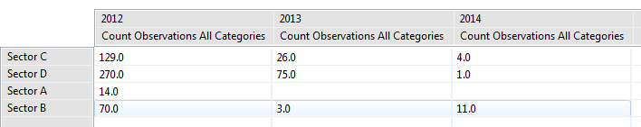

Um resumo sintetiza os dados brutos e permite que eles sejam agrupados em diferentes categorias. Resumos de resultados só podem ser visualizados em tabelas.
 |
Exemplo de Consulta de Resumo |
Itens que podem ser resumidos incluem categorias de modelo de dados (número total de observações de armadilhas) e atributos numéricos de modelo de dados (número total de armas). Múltiplos valores podem ser calculados em uma única consulta.
Os valores acima podem ser agrupados por tempo (ano, mês, etc), áreas (setores de gerenciamento), categorias de modelo de dados ou atributos de modelo de árvore de dados. Múltiplos grupos por podem ser selecionados para uma única consulta.